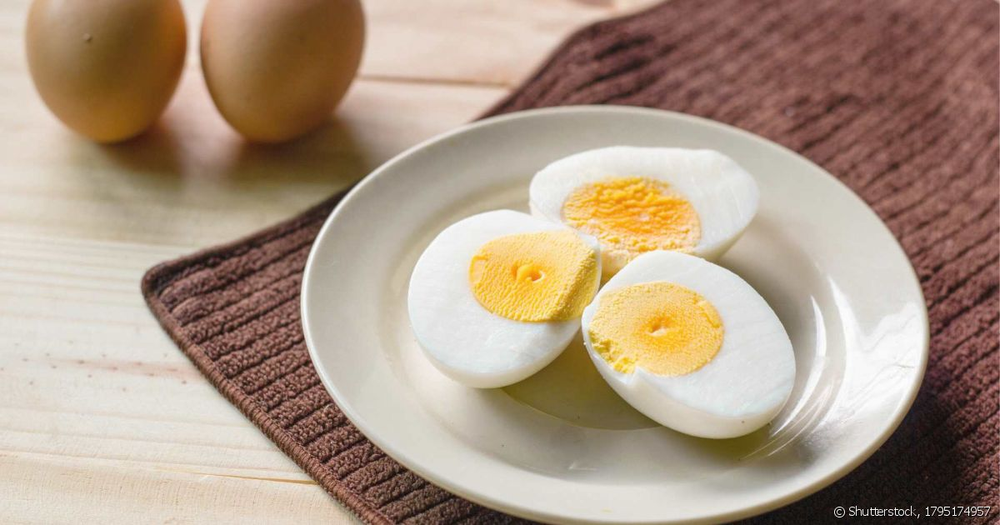

Back to homepage
Easy Hard Bolied Eggs Recipe

Description:
I've tried many different ways to make a great,
easy, hard-boiled egg with a soft white and a
nice fluffy yolk that's not grey on the outside.
After lots of trial and error, I've finally
done it. After cooking I usually keep them in
the shell until I need them. Enjoy!
Ingredients:
Steps:
- Place eggs into a saucepan and fill with water
until eggs are just barely covered.
- Bring water to a boil. Boil eggs for 4 1/2
minutes. Remove from heat and let eggs sit in
hot water for 20 minutes.
- Transfer eggs to a bowl and either peel and
serve, or keep shells on and place in the
refrigerator until you are ready to serve.
Original recipe: Easy hard boiled eggs - All Recipes